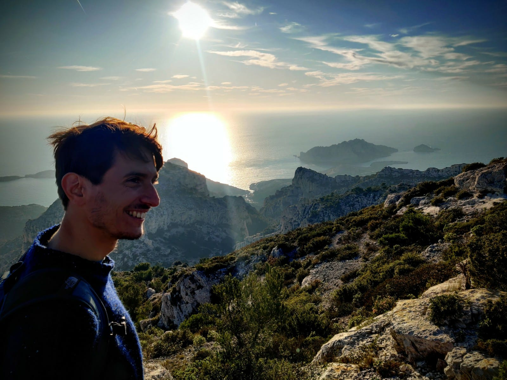

I am a physicist and data analyst with a broad interest for biology and neuroscience. Upon completing a Ph.D in quantum physics at University of Turin, I switched my research interest to data analysis for the biological sciences and I joined the Statistical and Biological Physics sector of the International School for Advanced Studies (SISSA), Trieste, where I worked in Prof.~Alessandro Laio's group from 2015 to 2018. My research activity within Prof.~Laio's grup has focused on advanced clustering techniques to the analysis of biological data.
In particular, I worked on the application of density peak clustering to brain imaging data (Allegra et al., Hum. Brain Mapp., 2017; Allegra et al., biorXiv 2018). More recently, I developed a Bayesian approach to cluster data according to the local intrinsic dimension (Allegra et al., arXiv 2019), with broad applicability to biological as well as social data.
My current research at the Timone Institute for Neuroscience in Marseille, together with the BraiNets group led by Andrea Brovelli, focuses on applying unsupervised learning, statistics and information theory to brain imaging data to to provide new insights in medical research.
Analysis of directional interactions in stroke via fMRI and Granger Causality
Institut de Neurosciences de la Timone, CNRS, Marseille, France
Development of temporal clustering methods for the analysis of fMRI time series
Scuola Internazionale Superiore di Studi Avanzati, Trieste, Italy
Information loss in the quantum/classical transition
PhD Scholarship: Università di Torino, Italy
Master in Physics of Fundamental Interactions Università di Torino, Italy
Bachelor degree in physics, Università di Torino, Italy